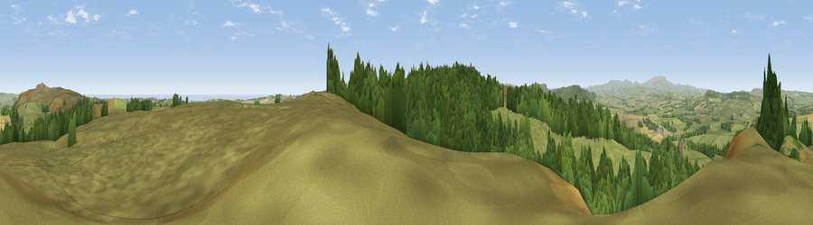

Viewpoint near Bolton
#2739 in England · top 13% of its area beats it · near Bolton · open accessWhere it is
The exact computed spot (NU 13875 11125). Click the marker for map links.
Public access: this spot lies on mapped open-access land (CRoW Act 2000) — you may roam here on foot. Computed from Natural England's CRoW access layer and OpenStreetMap rights of way — not the legal definitive map. Always verify locally.
The view, rendered

A 360° render of this exact spot computed from the terrain model, tree cover and land cover — summer colours, afternoon light, calibrated against photographs of famous viewpoints. Real trees, hedges and buildings will differ in detail.
The panorama
Grey silhouette: terrain skyline in each direction (720 bearings, Earth curvature and refraction included). Dashed green: skyline with trees (+15 m) and buildings (+8 m) as obstacles. Blue strip: how far the ground is visible on each bearing.
Where the view opens
Wedge length = distance to the farthest visible ground on that bearing (vegetation-aware). Rings at 10, 25 and 50 km.
What fills the view
55% grassland · 40% woodland · 4% cropland ·
Angular shares of the visible panorama (visual magnitude), not map area. Landscape diversity 0.38 (0–1 Shannon).
Key numbers
More beautiful places nearby
The staircase of upgrades: each row has a higher view potential than everything closer. Driving times are estimates from straight-line distance, calibrated against real road routing — check an actual route before setting out.
| Place | Direction | Drive | Score |
|---|---|---|---|
| Cloudy Crags | NNE · 3 km | ~7 min | 80.2 |
| Viewpoint near Glanton | NW · 7 km | ~15 min | 82.9 |
| Viewpoint near Eglingham | NNW · 12 km | ~23 min | 83.8 |
| Viewpoint near Chillingham | NNW · 15 km | ~27 min | 88.1 |
| Viewpoint near Easington | SSE · 109 km | ~134 min | 90.2 |
| The Knoll | S · 527 km | ~478 min | 91.0 |
55.39389, -1.78250 · source: screening · position refined by local search. Computed location — check access rights before visiting.